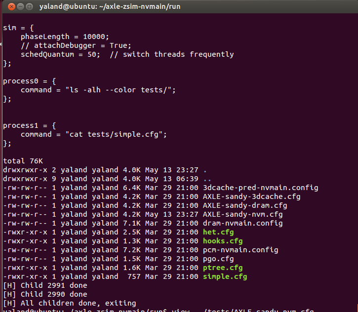

我在网上找到的关于ZSim/NVMain混合内存模拟器的编译教程大致分为两大类。一种使用的是原版ZSim，称为axle-zsim-nvmain。另一种使用的是华中科技大学在原版基础上扩展后的ZSim，称为HSCC或SHMA。
上面两者我都自己尝试过，也碰到过不少问题，做过一些探究，在此予以记录。对于我未能解决的问题，希望各位读者能够给出答案。
本文编译的是原版ZSim/NVMain，即axle-zsim-nvmain。关于HSCC的编译过程，请参考我另一篇博客。
环境
操作系统：Ubuntu 12.04 amd64（VMWare）
内核版本：3.13.0-32-generic
编译器版本：GCC 4.6.3
模拟器GitHub代码仓库：https://github.com/AXLEproject/axle-zsim-nvmain
编译模拟器
下载代码和依赖库
首先把GitHub仓库的代码拉下来。仓库的README和install.sh把步骤都写的很详细了。根据这些内容，我自己的编译过程如下：
-
下载Intel PinTool并解压。axle-zsim-nvmain用的Pin 2.13，但官网已经不提供下载了。所以我下载了Pin 2.14。
wget http://software.intel.com/sites/landingpage/pintool/downloads/pin-2.14-71313-gcc.4.4.7-linux.tar.gz -
下载NVMain的代码。install.sh用的是bitbucket的链接，但这个仓库已经失效了。所以我用的是GitHub上的NVMain仓库：https://github.com/SEAL-UCSB/NVmain
-
安装依赖包。
sudo apt-get install libelfg0-dev libhdf5-serial-dev scons libconfig++-dev libboost-regex-dev g++ -
添加环境变量。有三个环境变量要设置：
PINPATH：PinTool解压后的文件夹NVMAINPATH：NVMain所在的文件夹ZSIMPATH：SConstruct所在的文件夹，即axle-zsim-nvmain目录
由于我把Pin和NVMain都解压在axle的文件夹下面，所以我就直接在axle文件夹里创建了一个env.sh脚本：
BASEDIR=$(pwd) PINPATH=$BASEDIR/pintool NVMAINPATH=$BASEDIR/nvmain ZSIMPATH=$BASEDIR export ZSIMPATH PINPATH NVMAINPATH在命令行里
sourve env.sh即可。 -
在SConstruct文件的第39行，ZSim会试图从你的环境变量里获取C/C++编译器名称。
env['CXX'] = os.environ["CXX"] env['CC'] = os.environ["CC"]但Ubuntu上默认没有这两个环境变量，所以这时候编译会报错。解决方法有两种：第一，设置这两个环境变量；第二，改写SConstruct，强制使用GCC。这里我选择第一种方式，在env.sh里加入：
export CXX=g++ CC=gcc然后
source env.sh。 -
在SConstruct第168行，ZSim会从环境变量中获取boost库的位置。但是我的libboost-regex是通过apt装在系统库里的，所以这一步就没必要了。解决方法有两种：第一，设置一个不存在的路径作为BOOST环境变量；第二，改写SConstruct。这里我选择第二种方式，注释掉第168-170行。
# Boost regex # BOOST = os.environ["BOOST"] # env["CPPPATH"] += [BOOST] # env["LIBPATH"] += [joinpath(os.environ['BOOST'], "stage/lib")] env["LIBS"] += ["boost_regex"] -
在nvmain/SConscript第36行，有个gem5相关的import。这个是用于gem5模拟器的，但我们是ZSim模拟器。
from os.path import basename # from gem5_scons import Transform我按照网上的一般做法，把它注释掉。
兼容Pin 2.14
axle-zsim-nvmain使用的不是最新版本的ZSim，用Pin 2.14编译会有一些问题。最新的ZSim对SConstruct做了一些修改，兼容了Pin 2.14。但很遗憾，axle-zsim-nvmain并没有更新这些东西。所以我用meld工具把一些内容粘贴过来了。具体修改的内容详见我在Gitee上的commit。
具体来说，有两个问题：
-
Pin 2.13里的
extras/xed2-intel64在Pin 2.14里改成了extras/xed-intel64。所以SConstruct里涉及到这个路径的地方都要改。否则编译的时候会找不到相关的头文件：In file included from pintool/source/include/pin/pin.H:43:0, from build/opt/decoder.h:31, from build/opt/core.h:30, from build/opt/ooo_core.h:32, from build/opt/contention_sim.cpp:35: pintool/source/include/pin/level_base.PLH:83:29: fatal error: xed-iclass-enum.h: No such file or directory compilation terminated. -
在Pin 2.13的
intel64/lib-ext里有libdwarf.a和libdwarf.so，到了Pin 2.14只有一个libpindwarf.a。于是，编译的时候会找不到这个库。scons: *** [build/opt/libzsim.so] Implicit dependency `pintool/intel64/lib-ext/libdwarf.a' not found, needed by target `build/opt/libzsim.so'.
编译代码
在axle-zsim-nvmain目录下运行scons编译。-j参数可以指定多线程加速编译过程。编译完后会生成zsim和libzsim.so两个文件，放在build/opt文件夹里。
scons -j2
这样编译出来的程序带有-O3优化。如果需要debug的话，要加--d参数，生成的程序放在build/debug中，与build/opt互不干扰。
用ldd命令检查libzsim.so的动态链接库，没有出现未定义的符号，所有的依赖库都链接到了系统库中。
$ ldd -r build/opt/libzsim.so
linux-vdso.so.1 => (0x00007fff53ffe000)
libconfig++.so.8 => /usr/lib/libconfig++.so.8 (0x00007f753e289000)
libboost_regex.so.1.46.1 => /usr/lib/libboost_regex.so.1.46.1 (0x00007f753df87000)
libelf.so.0 => /usr/lib/libelf.so.0 (0x00007f753dd6e000)
....
libhdf5.so.6 => /usr/lib/libhdf5.so.6 (0x00007f753d3c6000)
libhdf5_hl.so.6 => /usr/lib/libhdf5_hl.so.6 (0x00007f753d194000)
....
运行模拟器
修改系统配置
ZSim的README里有说明，要改几个内核参数。运行如下命令：
sudo sysctl -w kernel.shmmax=1073741824
sudo sysctl -w kernel.yama.ptrace_scope=0
运行ZSim
运行方法为zsim <config>。比如，运行axle自带的NVM配置文件：
./build/opt/zsim ./tests/AXLE-sandy-nvm.cfg
这个配置文件有两个负载，分别是ls和cat命令：
// Populate process entries with scripts
// Simple example with 2 processes given
process0 = {
command = "ls -alh --color tests/";
};
process1 = {
command = "cat tests/simple.cfg";
}
这里command的书写方式有点类似于shell命令。上面的command用的是相对路径，如果zsim换一个路径运行，就可能找不到相应的文件了。command支持环境变量，因此我是这样写的：
process0 = {
command = "ls -alh --color $ZSIMPATH/tests/";
};
下图是部分输出结果。cat命令的输出太长，所以我就只截图了最后一部分，以及ls的完整输出。cat输出了simple.cfg文件内容，ls则列举了tests文件夹的所有内容。然后两个child done，模拟器退出。

统计输出
模拟器运行结束后，在当前目录下会有一系列的统计数据。
$ ls
heartbeat out.cfg zsim-ev.h5 zsim.log.0 zsim.out
mem-0-nvmain.out zsim-cmp.h5 zsim.h5 zsim.log.1
以zsim.out为例。在该文件里，有每个CPU核的统计信息，包括执行的周期数和指令数。此外，还有各级缓存的命中率、每个进程执行的指令数等，以及NVMain内存控制器的统计信息。
......
sandy: # Core stats
sandy-0: # Core stats
cycles: 1492524 # Simulated unhalted cycles
cCycles: 1122301 # Cycles due to contention stalls
instrs: 212977 # Simulated instructions
uops: 227667 # Retired micro-ops
bbls: 46942 # Basic blocks
......
mem: # Memory controller stats
mem-0: # Memory controller stats
issued: 12804 # Issued requests
rd: 12804 # Read requests
wr: 0 # Write requests
PUTS: 0 # Clean Evictions (from lower level)
PUTX: 0 # Dirty Evictions (from lower level)
......
至于其他文件，目前我知道的有：
- out.cfg是本次运行的ZSim的所有配置
- zsim.log是每个进程各自的输出日志
- mem-0-nvmain.out是NVMain的详细统计信息
- h5文件则是以二进制格式保存的统计数据，可用pandas等工具读取分析。
问题与思考
我在编译ZSim/NVMain中，碰到过不少问题，也了解过不少命令的含义，为的是想要搞清楚这个模拟器编译起来会这么复杂。在此予以记录，希望能解决一部分人的疑惑。
新版本ZSim的一些特点
axle-zsim-nvmain使用的不是最新版本的ZSim。最新版本的ZSim有一些不同的地方。目前我找到的有：
- 没有boost库依赖。
- 完美支持Pin 2.14
- NULL改成nullptr
- 新增了几个文件（access_tracing、parse_vdso等），zsim.cpp/init.cpp/zsim.h等代码有大幅度改动。
我不清楚NVMain还能否兼容最新的ZSim。因为NVMain官方仓库只给了一个axle-zsim-nvmain的链接，没有说清楚怎么给ZSim打补丁。
PinTool对于系统和编译器版本的限制
What is the last known working environment for the zsim in this repository?
PinTool不是一个完全开源的工具。它有很多已经编译好的文件。ZSim只能通过静态或动态链接的方式使用它们。这就要求你必须使用匹配的GCC版本，否则编译出来的符号表之类的就会不匹配，导致链接失败。
在pin_kit/source/include/pin/gen/cc_used_ia32_l.CVH中有如下定义，说明Pin 2.13是用GCC 4.4编译的。
#define CC_USED__ 4
#define CC_USED_MINOR__ 4
#define CC_USED_PATCHLEVEL__ 7
#define CC_USED_ABI_VERSION 1002
在pin_kit/source/include/pin/compiler_version_check2.H里，CC_USED_ABI_VERSION必须GCC内置的__GXX_ABI_VERSION匹配，不匹配就不通过。
#elif CC_USED_ABI_VERSION == 1002
#if CC_USED_ABI_VERSION != __GXX_ABI_VERSION
#error This kit requires gcc 3.4 or later
#endif
#else
默认使用1002的ABI的只有GCC 3.4和GCC 4.x。
GCC 3.4这个版本行不通，因为ZSim使用的标准是C++0x。所以我们至少要用GCC 4.6，这也是ZSim作者自己使用的版本。
综上所述，由于我是Ubuntu用户，同时又不想自己指定ABI版本，我只能用Ubuntu 12.04（GCC 4.6）或者Ubuntu 14.04（GCC 4.8）了。
Ubuntu 16使用的是GCC 5，所以不能直接使用。虽然可以手动安装GCC 4.8，但是系统里的各种第三方库可能还是用GCC 5编译的。这种情况下我没办法保证ZSim还能正常工作。
ptrace与args.push_back(“child”)
Pin 3.0 Compilation · Issue #109 · s5z/zsim
ZSim是一个user level模拟器。它需要利用PinTool向负载进程里注入模拟器的代码，即使用ptrace。
出于安全性，除非是root用户，否则Linux默认只允许父进程跟踪子进程。所以要用sysctl允许任意进程注入代码。这一点在ZSim的README里已经说明了。
sudo sysctl -w kernel.yama.ptrace_scope=0
不过，网上大多数博客使用的是另一种做法：用-injection child参数，让Pin将负载创建为子进程。这样确实可以运行模拟器，但是由于不是ZSim官方的做法，会导致ZSim的一些错误提示失效。有时候，我看到控制台里输出了一个“运行结束”：
[H] Child 4204 done
但我查看负载的运行结果，发现负载实际上运行错误了。
换句话说，这种情况下ZSim不再是负载的父进程，所以无法直接获取到负载的退出状态。你应该通过负载的输出来判断它是否运行正常。
shmmax
ZSim在负载进程中注入的数据位于共享内存空间中。这样ZSim在并发运行多个负载时，就不需要重复注入代码。
Ubuntu 12.04默认的shmmax只有32MB。
$ cat /proc/sys/kernel/shmmax
33554432
如果这个值小于ZSim配置文件里的gmMBytes，就会报下面的错误：
[H] Creating global segment, 1024 MBs
gm_create failed shmget: Invalid argument
sysctl可以扩大shmmax，单位是byte。我这里设置的是1GB。
sudo sysctl -w kernel.shmmax=1073741824
新版本的系统，比如Ubuntu 14，shmmax几乎无限制，那么就不需要自己调shmmax了。